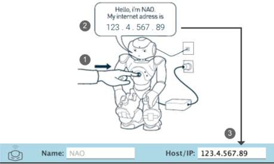

基本操作#
设置你的机器人#
下载机器人配置软件#
在您的电脑上，根据您的操作系统下载Robot Settings安装程序版本。
| 系统 | 版本 | 下载链接 |
|---|---|---|
| Linux | Ubuntu 16.04 Xenial Xerus - 64bits only | Robot settings Linux 64 - InstallerRobot settings Linux 64 - Tar |
| Windows | Microsoft Windows 10 - 64bits | Robot settings Win 64 - InstallerRobot settings Win 64 - Tar |
| Mac | Mac OS X 10.12 Sierra | Robot settings Mac 64 - InstallerRobot settings Mac 64 - Tar |
下载完成直接双击安装，完成后打开。
获取机器人ip地址#
1.使用网线进行连接后，从电脑端的app中设置机器人连接无线网

2.快速按下NAO的胸部按钮一次。NAO会复述他的IP地址的四个数字，用点分隔。
3.将IP地址填入ROBOT SETTING 界面，按ENTER键连接机器人NAO，并在用户界面中配置需要连接的WIFI，配置好即可拔掉网线，重新按压机器人胸部按钮，获得新的IP地址。

使用ALProxy代理连接#
下载安装Python SDK#
支持的操作系统
| 系统 | 版本 |
|---|---|
| Linux | Ubuntu 16.04 Xenial Xerus - 64bits only |
| Windows | Microsoft Windows 10 64bits |
| Mac | Mac OS X 10.12 Sierra |
Mac10.12以上的版本也支持
Windows#
- 下载安装Python 2.7. 下载链接
- 下载NAOqi for Python:
pynaoqi-python2.7-2.8.6.23-win64-vs2015-20191127_152649.zip点击下载. - 设置windows环境变量(网上可搜索添加教程)，添加一个用户变量
variable：PYTHONPATHvalue:path\to\python-sdk\lib- 下载安装“Microsoft Visual C++ 2010 Redistributable Package (x86)
Mac#
- 确保 System Integrity Protection 被禁用。有关详细信息，请参考[Apple] Configuring System Integrity Protection
- 安装python2.7下载链接: ，确保安装在
/usr/local/bin/python, 而不是/usr/bin/python - 下载NAOqi Mac版本
pynaoqi-python2.7-2.8.6.23-mac64-20191127_144231.tar.gz。点击下载. - 设置环境变量
$ export PYTHONPATH=${PYTHONPATH}:/path/to/python-sdk/lib/python2.7/site-packages
$ export DYLD_LIBRARY_PATH=${DYLD_LIBRARY_PATH}:/path/to/python-sdk/lib
$ export QI_SDK_PREFIX=/path/to/python-sdk
Linux#
- 确保Python版本为2.7
- 下载安装NAOqi Linux版本，点击下载.
- 设置环境变量，也可更改bashrc文件。
$ export PYTHONPATH=${PYTHONPATH}:/path/to/python-sdk/lib/python2.7/site-packages
$ export QI_SDK_PREFIX=/path/to/python-sdk
检查是否安装成功#
在python2.7环境中使用
import naoqi
ALProxy#
ALProxy是一个代理对象，它允许用户通过机器人Nao在局域网内的IP地址和端口（port）访问连接到的所有方法或模块（如：ALTextToSpeech模块等等。
class(module_name, ip_address, port)
- module_name: 需要连接到的功能模块等
- ip_address: 机器人nao的ip地址
- port：Nao机器人侦听的端口（默认为9559）
模块的每个方法都可以通过对象直接访问，例如以下例程通过ALTextToSpeech的say方法实现远程控制Nao机器人说Hello World：
from naoqi import ALProxy
tts = ALProxy("ALTextToSpeech", "<IP of your robot>", 9559)
tts.say("Hello, world!")
并行任务执行#
用户初始化的每一个ALProxy对象都有一个名为post(代码中第五行)的属性，这能让每一个代理调用的方法同步=执行，而不需要按照正常python的执行顺序顺序执行，如以下实例实现了Nao机器人行走同时并说话：
from naoqi import ALProxy
motion = ALProxy("ALMotion", "<IP of your robot>", 9559)
tts = ALProxy("ALTextToSpeech", "<IP of your robot>", 9559)
motion.setStiffnesses("Body", 1.0)
motion.moveInit()
motion.post.moveTo(0.5, 0, 0)
tts.say("I'm walking")
- 除非您将关节的刚度设置为非0 的，否则机器人不会移动。为此，只需调用
ALMotion.setStiffnesses方法， 如代码中第四行所示ALMotion.moveInit()API 将机器人初始化在一个合适的位置（准备移动）ALMotion.moveTo()API 是机器人朝制定方向移动一段距离，单位（m)ALMotion.post使并行执行能
如果您需要等待直到给定任务完成，您可以使用ALProxy的wait方法，参数为post方法返回的任务id，示例如下：
from naoqi import ALProxy
motion = ALProxy("ALMotion", "<IP of your robot>", 9559)
motion.moveInit()
id = motion.post.moveTo(0.5, 0, 0)
motion.wait(id, 0)